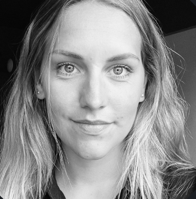

<!DOCTYPE html>
<html lang="en">
    <head>
        <meta charset="UTF-8">
        <title>Resume Linnea Åkerman</title>
    </head>
</html>

<body>
    <h1>Linnea Åkerman</h1>
    
    <h2>About me</h2>
    <p>My name is Linnea and I currently work as a UX Designer at a Medtech company startup called OneTwo Analytics. I live in Stockholm and part time in Bollnäs, where my husband owns an ICA store.</p>
<hr>
<h2>Education</h2>
    <ul>
        <li>Esthetics, Film. Kulturama Gymnasium (2013-2016)</li>
        <li>Informatics, Digital Design. Högskolan Kristianstad (2020-2023)</li>
    </ul>
<hr>
<h2>Work Experience</h2>
    <ul>
        <li>
            <h3>UX Designer - OneTwo Analytics</h3>
            <p>2023 - Current</p>
            <p>I work with research, design and user testing for our products wich include our patient app and our software systems for diabetes care. I'm also a part of the regulatory team where I'm responsible for documenting and maintaining the usability enginnering process to ensure full compliance with the regulations for medical devices.</p>
        </li>

        <li>
            <h3>Web Designer - Lundberg&Co</h3>
            <p>Internship 2022 - 2023</p>
            <p>During my internship at Lundberg&Co, I designed and built two new websites for the construction company Svenska Husgruppen.</p>
        </li>

        <li>
            <h3>Production assistant - Meter Television</h3>
            <p>2017 - 2020</p>
            <p>During these years I worked with various productions at Meter Television. I mainly worked with "food productions", such as Sveriges Mästerkock and Kockarnas Kamp, where I was part of the food team responsible for the planning and presentation of all the food that was shown on air. In addition to that, I have also worked with productions such as Wild Kids and Ex on the Beach Sweden. Experiences from these jobs include working against strict deadlines, meeting deadlines and making quick decisions.</p>
        </li>
    </ul>
<hr>
<h2>Skills</h2>
    <ul>
        <li>UX/UI</li>
        <li>Usability Engineering</li>
        <li>User Testing</li>
        <li>User Research</li>
        <li>Interviews</li>
        <li>Product Development</li>
    </ul>
<hr>
<h2>Awards</h2>
    <ul>
        <li>
            <h4>Swedish Film Institute Honorary Award</h4>
            <p>Novemberfestivalen Trollhättan</p>
            <p>2016</p>
        </li>
        <li>
            <h4>Best Film</h4>
            <p>STOCKmotion Film Festival</p>
            <p>2016</p>
        </li>
    </ul>
<hr>
<h2>Other</h2>
    <ul>
        <li><a href="./public/contact.html">Contact me</a></li>
        <li><a href="./public/coverletter.html">Cover letter</a></li>
    </ul>
<footer>
    <p>© 2024 Linnea Åkerman. All rights reserved.</p>
</footer>
</body>